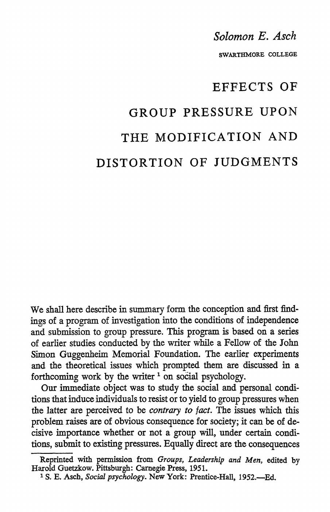
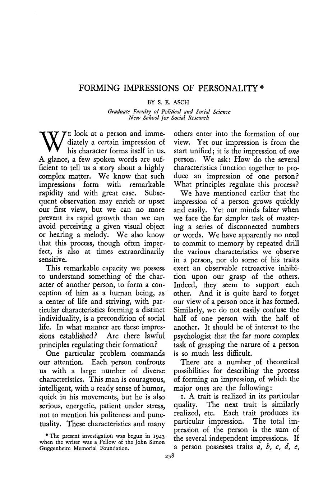
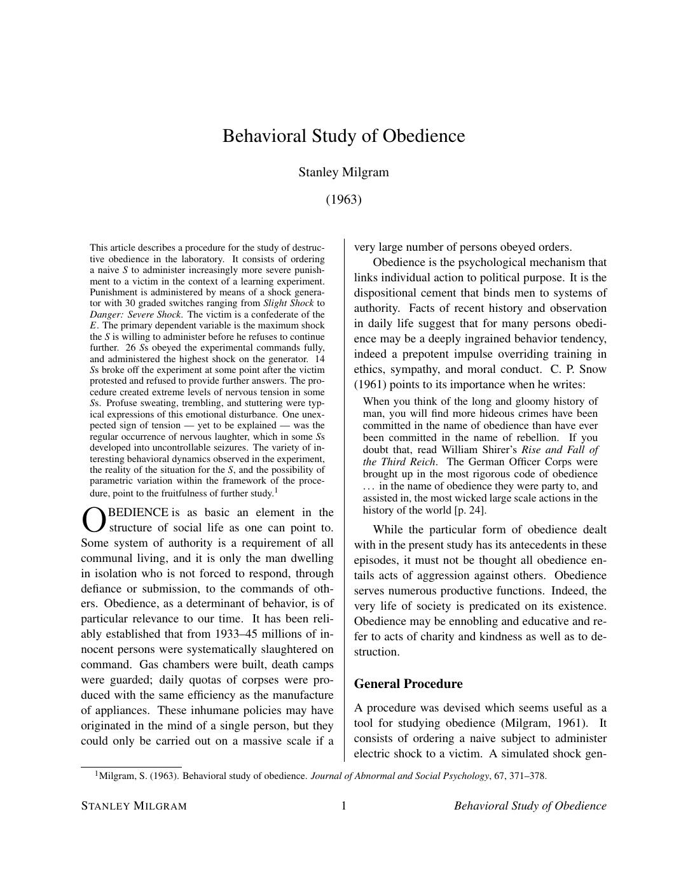
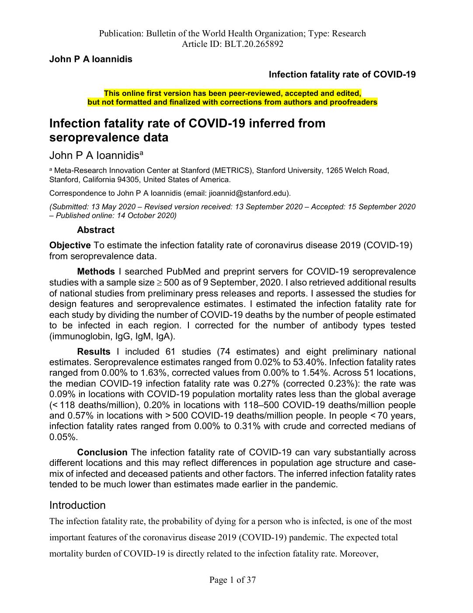
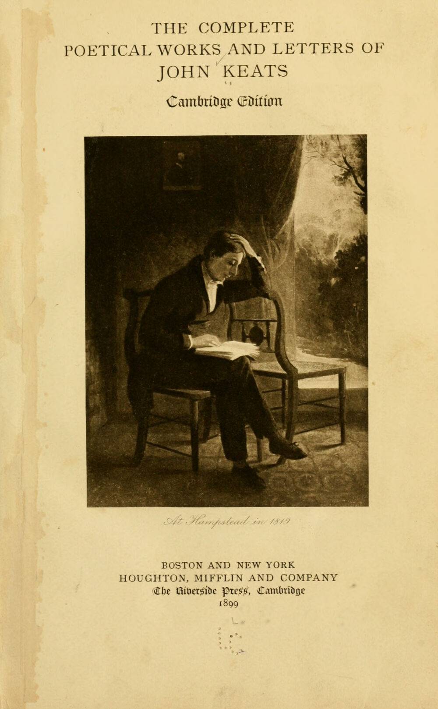

1:14:51 · 11 OPERE
Industria culturale, manipolazione e sistema economico.
Il filo del discorso
L’intervento collega la comunicazione sulla pandemia a una domanda più ampia: come si forma un’opinione quando le parole, le appartenenze e gli interessi economici precedono l’esame delle prove? Dr Divago denuncia una crisi della discussione e interpreta varie formule pubbliche come strumenti che possono restringere il dissenso. Le accuse di manipolazione e di coordinamento degli apparati appartengono al relatore; l’esistenza di collegamenti istituzionali non ne costituisce da sola la dimostrazione. La prima parte attraversa il linguaggio dei test, i grafici epidemici, il confronto fra cause di morte e la capacità ospedaliera. Il ricordo personale dell’uragano Sandy serve a rappresentare lo scarto che l’autore percepisce fra esperienza e racconto dei media. La scheda conserva questi argomenti come tesi discusse, distinguendo positività, malattia e contagiosità, misure di mortalità non equivalenti e limiti dei paragoni fra scenari. L’esperienza individuale non annulla danni e rischi documentati. Il nucleo sul conformismo richiama Asch e Milgram. Il saggio di Asch del 1946 sulle impressioni di personalità è distinto dall’esperimento delle linee del 1951; il lavoro di Milgram del 1963 riguarda l’obbedienza in una situazione sperimentale con scosse simulate. Dr Divago li usa per interrogare la delega dell’autorità e la ripetizione del giudizio altrui. La loro estensione all’intera società è una sua interpretazione, mentre i risultati originari comprendono differenze individuali, indipendenza e limiti del campione. La discussione di University, Inc. di Jennifer Washburn sposta l’attenzione sui conflitti economici nelle università, sui rapporti con industrie e apparati militari e sulle pressioni nella pubblicazione scientifica. L’autore cita casi e passi del volume per sostenere che la crisi riguarda anche il ruolo educativo del sapere. I conflitti riportati non autorizzano una condanna indifferenziata di tutti i ricercatori o di ogni risultato scientifico. La conclusione cerca un diverso ideale di cultura. Il proemio della Monarchia di Dante lega la conoscenza alla responsabilità verso chi verrà; la lettera di Keats a Reynolds immagina una circolazione delle scoperte capace di far crescere una foresta democratica. La scena dei fagioli di Blackadder offre infine un esempio comico della differenza tra ripetere un enunciato e pensare. L’invito all’autonomia del giudizio costituisce il filo che unisce la polemica iniziale a questa chiusa letteraria.
I libri nel discorso

Effects of Group Pressure upon the Modification and Distortion of Judgments
Identificazione probabile
Copertina: Prima pagina di una ristampa del capitolo originariamente in Groups, Leadership and Men, Carnegie Press, 1951
Prima pagina della ristampa del capitolo 1951. Il PDF MIT del 1955 è una diversa pubblicazione di Asch usata solo per il riscontro bibliografico: non è la fonte dell’immagine.
Riferimento ricavato dalla trascrizione automatica.
Passaggio 31:44 ↗ · Fonti e libro ↗
Forming Impressions of Personality
Copertina: Prima pagina dell’articolo originale, Journal of Abnormal and Social Psychology 41(3), 1946, p.258
Riferimento ricavato dalla trascrizione automatica.
Passaggio 32:08 ↗ · Fonti e libro ↗
Behavioral Study of Obedience
Identificazione probabile
Copertina: Prima pagina del testo di Behavioral Study of Obedience, riproduzione didattica ospitata da UNC
Riferimento ricavato dalla trascrizione automatica.
Passaggio 40:16 ↗ · Fonti e libro ↗
Infection Fatality Rate of COVID-19 Inferred from Seroprevalence Data
Identificazione probabile
Copertina: Prima pagina del manoscritto accettato, online-first 14 ottobre 2020, Bulletin of the World Health Organization
Riferimento ricavato dalla trascrizione automatica.
Passaggio 46:49 ↗ · Fonti e libro ↗
University, Inc.: The Corporate Corruption of Higher Education
Copertina: Basic Books, brossura del 22 agosto 2006, ISBN 9780465090525, con una nuova introduzione dell’autrice. Prima edizione del 2005; il catalogo Wellcome registra il sottotitolo The Corporate Corruption of American Higher Education.
Immagine autentica dell’opera, controllata visivamente; l’edizione di riferimento non è attribuita al filmato.
Riferimento ricavato dalla trascrizione automatica.
Passaggio 51:13 ↗ · Fonti e libro ↗
Candido o l’ottimismo
Identificazione probabile
Copertina: Feltrinelli · Universale Economica I Classici · 2013 · traduzione di Stella Gargantini
Immagine autentica dell’opera, controllata visivamente; l’edizione di riferimento non è attribuita al filmato.
Riferimento ricavato dalla trascrizione automatica.
Passaggio 54:40 ↗ · Fonti e libro ↗
La società del contrario
Identificazione probabile
Copertina: Zambon · 2005
Copertina autentica dell’edizione di riferimento, controllata visivamente. Non identifica l’esemplare letto o citato nel video.
Riferimento ricavato dalla trascrizione automatica.
Passaggio 1:06:10 ↗ · Fonti e libro ↗
The Empty Campus
Identificazione probabile
Copertina: Lulu · edizione inglese di riferimento
Immagine associata all’ISBN di riferimento e controllata visivamente; edizione e traduzione non identificate come quelle citate o lette nel video.
Riferimento ricavato dalla trascrizione automatica.
Passaggio 1:06:17 ↗ · Fonti e libro ↗Monarchia
Copertina: Luni / Fondazione Biblioteca di via Senato, 2021, ISBN 9788879847254
Riferimento ricavato dalla trascrizione automatica.
Passaggio 1:08:21 ↗ · Fonti e libro ↗
Lettera a John Hamilton Reynolds del 19 febbraio 1818
Copertina: Frontespizio della raccolta The Complete Poetical Works and Letters of John Keats, Cambridge Edition, Houghton Mifflin, 1899
Riferimento ricavato dalla trascrizione automatica.
Passaggio 1:11:38 ↗ · Fonti e libro ↗
Head (Blackadder II, episodio2)
Identificazione probabile
Fotografia dell’episodio BBC,1986: Fotografia ufficiale BBC dell’episodio Head, prima trasmissione16gennaio 1986. Da sinistra Miranda Richardson come Elisabetta I, Rowan Atkinson come Edmund Blackadder e Patsy Byrne come Nursie. Immagine acquisita dalla scheda Apple TV, non copertina di un libro e non la inquadratura della battuta sui fagioli.
Fotografia ufficiale della scena a corte, corrispondente alla didascalia BBC. Non mostra Baldrick mentre conta. La scena non è dell’episodio del dizionario della terza serie.
Riferimento ricavato dalla trascrizione automatica.
Passaggio 1:13:23 ↗ · Fonti e libro ↗